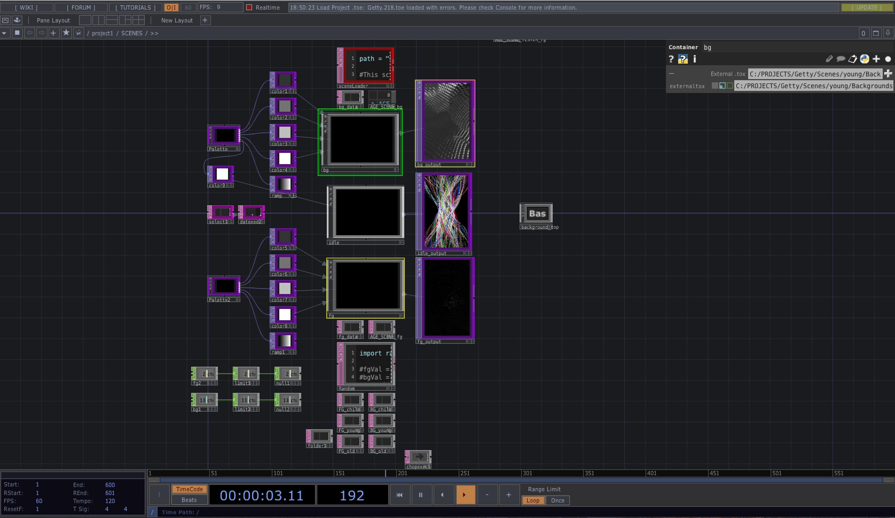

On April 29, 2019, the Getty Center celebrated “Color.” An event focused on color in imagination, the science of color, art, and the future. The chair of our department, Ana Herruzo, gave us the opportunity to create an immersive, interactive installation merging artificial intelligence and visual arts. Named “WISIWYG: What I See Is What You Get,” the installation produced live data and animations by analyzing user facial expressions and used a machine learning algorithm to train the artificial neural network models from the Getty Museum’s art collection. It consisted of three video screens stacked vertically into one seamless display, a camera for facial recognition, and an Xbox kinect for motion data. The experience was powered by TouchDesigner, a tool for creating realtime generative art.

My job was creating the "playback system" (aka the state machine). This is basically the logic that determines when different things happen. For example, the players would step into the designated space where they could interact with the device. The installation would then wait for a few seconds before transitioning into the main interaction, where the animations would play silouhetted by the user.
My other job was creating the idle state of the experience. Given that the installation was designed to do the same thing every time with slight variations, people could use it a few times and get everything out of it. One final touch to make this exhibit something that people could be invested in was to create a story with it. Seeing as how we were generating art descriptions using artificial intelligence, we thought maybe would could generate art as well. But of course, creating art through artificial intelligence is much harder than text and is not something we would be able to pull off in time. Additionally, it would not exactly fulfill the need of turning the installation into a narrative that people could be invested in. We needed to implement a system that allowed the people interacting with the exhibit to be involved with the crafting of the narrative. And so the idea emerged to create a part of the exhibit that would change over time with each interaction.
So how would this work? We needed to create something iterative that could be added to over time, reflected the experience or the individual who interacted with the experience, fit within the theme of what we had created, and consider the context with which the installation was being exhibited. With those parameters, an idea was able to flourish rather effortlessly. To satisfy the ideas of something iterative and fitting to be displayed at an art museum, I came to the idea of creating a part of the installation where a piece of art would be added to over time, one stroke at a time. The size and position of the stroke would be randomized each time to guarantee variation, while the color of the stroke would be determined by the emotion the viewer is expressing when looking at the installation to make the piece representative of the experience. And finally, to make this all fit within the aesthetic we were going for, we made the stroke being laid down animated in a rhythmic sway with slight variance, like a ribbon. Each ribbon had one solid stroke of color, and then an extra part on each side in a wireframe to simultaneously break up the piece and fit within the aesthetic of the project.

All of this came together to create WISIWYG. While no one was interacting with the project, it displayed an idle screen of a piece of art. After standing in front of the video screens, animations were chosen based on age and manipulated in real time using emotions. After around 10 seconds of this, text was generated and displayed based on age, emotion, and number of people currently interacting with the installation. Finally, a credits screen faded into view and another stroke was added to the piece of art that displayed during the idle scene.